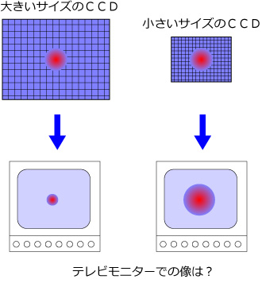
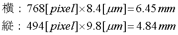

さて，ＣＣＤに映った画像はテレビモニターに映し出されます．
その大きさは，もちろんテレビ画面の大きさによって大きく変わりますが，ピクセル数，という概念で行くと，ＮＴＳＣ信号の場合，PCへ取り込んだ場合，
640x480
という画素数になります．
極論を言うと，
640x480のピクセルがあるＣＣＤの画像がテレビモニター，PCに映し出される
のです（正確には違いますが）．
しかし，ＣＣＤによってピクセルの大きさが違ってきます．
つまり，ＣＣＤ自体のサイズが違ってくるのです．
ですので，
同じ結像像でもＣＣＤのサイズによってはテレビモニターに映し出される像の大きさが違う
のです．

ですので，実際のモニター，PCへの変換の場合には，ＣＣＤのサイズが重要となってきます．
では，一つの例として，ワテックの，WAT-100N(EIA)，のＣＣＤのサイズを見ていきましょう．
すると，
| 横 | 縦 | |
| 総画素数 | 811 | 508 |
| 有効画素数 | 768 | 494 |
| セルサイズ（ミクロン） | 8.4 | 9.8 |
となっています．つまり，ＣＣＤのサイズは，

となります．
つまり，ＰＣに取り込んだ場合のピクセルの換算は，
サンプルの大きさ × 顕微鏡の拡大率 ÷ ＣＣＤの大きさ × ピクセル数
となります．
次に実際の画像を見ながら，確認してみましょう．